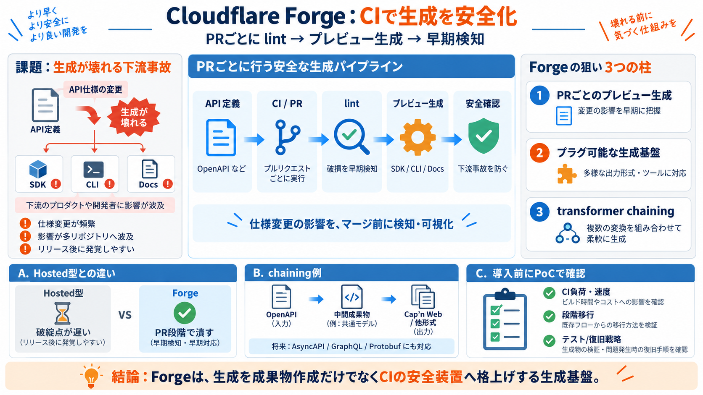

Introducing Forge: the open source pipeline for...
Forge is an open source, pluggable code generation pipeline from Cloudflare that runs in CI to generate SDKs, CLIs, docu…

API仕様からSDK/CLI/ドキュメント等を自動生成し、プルリク段階で破損や影響を早期検知する仕組みです。
API規模が大きいほど仕様変更が頻繁になり、生成ツールが壊れてもリリース後に発覚しやすくなります。
ForgeはCI上で各リポジトリの変更を取り込み、lint（静的検査）後にCLI/ドキュメント/SDKの「プレビュー版」を生成します。
成果物を作るだけでなく、「生成パイプラインが壊れていないか」をPR段階でチェックして、事故の入り口を塞ぎます。
Forgeは、Hostedな生成だけだと大規模性の課題が残る場面に対し、CIでプルリクごとの検証を重ねて運用しやすくする方針です。
ForgeはOpenAPI由来の成果物をさらに変換して別形式へ作り替える「chaining」を前提に設計されています。
記事では、OpenAPIからCloudflareのRPC基盤であるCap’n Webの仕様を直接作れる例が挙げられています。
API仕様だけでは作れないCLI固有の手作りコマンド（例：cf dev、cf build）の扱いを、ドキュメントへどう統合するかが課題になります。
生成成果物を伴うAPIのメジャーバージョン移行（v4→v5のような大変更）でも、既存クライアントを壊しにくいアプローチを検討すると述べられています。
ForgeはApache 2.0ライセンスで公開され、SaaSに依存せず自社で所有してローカル実行できる点を重視しています。
Forgeの本質は、コード生成ツールの公開よりも「生成をCIの安全装置へ格上げする」点にある、という評価です。
導入コスト、移行手順、生成速度・デバッグ体験、互換性テスト戦略などは十分に提示されていないため、PoCで確かめる必要があります。
Forgeは、CI上でPRごとにプレビュー生成し、生成パイプラインの破損を早期検知することで、大規模APIの安全運用を狙う“生成基盤”です。
Forge is an open source, pluggable code generation pipeline from Cloudflare that runs in CI to generate SDKs, CLIs, docu…
Forge makes it possible to take an OpenAPI spec and generate Cap’n Web directly. This opens the door to generating bindi…
Home # Cloudflare Announces Forge Cloudflare announced Forge, an open source, pluggable generation pipeline that anyon…
## Repository files navigation # Forge Forge is a schema-first OpenAPI code generation and surface tooling framework. …
Python 3.8 is no longer supported. The minimum required version is now Python 3.9. `typing-extensions` minimum version …